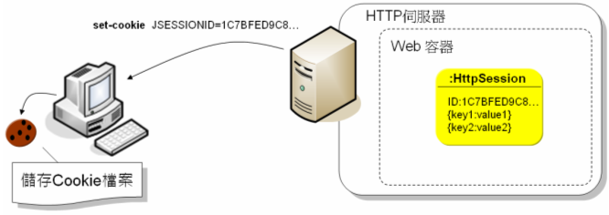
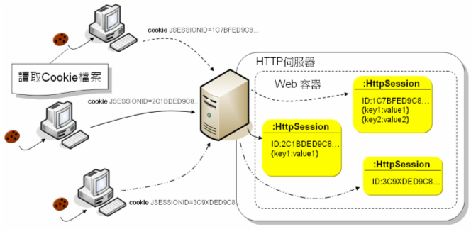

|
|
使用HttpSession進行會話管理十分方便，讓Web應用程式看似可以「記得」是瀏覽器發出的請求，連接數個請求間的關係。但無論如何，Web應用程式是基於HTTP協定的事實並沒有改變，實際上如何「得知」數個請求之間的關係，這件工作是由Web容器幫你執行。 當你嘗試執行HttpServletRequest的getSession()時，Web容器會為你建立HttpSession物件，關鍵在於每個HttpSession物件都會有個特殊的ID，稱之為Session ID，你可以執行HttpSession的getId()來取得Session ID。這個Session ID預設會使用Cookie存放至瀏覽器，Cookie的名稱預設是JSESSIONID，數值則是getId()所取得的Session ID。  由於Web容器本身是執行於JVM中的一個Java程式，透過getSession()取得的HttpSession，則是Web容器中的一個Java物件，HttpSession中所存放的屬性，自然也就存放於伺服端的Web容器之中。每個HttpSession各有特殊的Session ID，當瀏覽器請求應用程式時，會將Cookie中存放的Session ID一併發送給應用程式，Web容器根據Session ID來找出對應的HttpSession物件，如此就可以取得各瀏覽器個別的會話資料。  所以使用HttpSession來進行會話管理時，設定為屬性的資料是儲存在伺服端，而Session ID預設使用Cookie存放於瀏覽器。Web容器儲存Session ID的Cookie預設為關閉瀏覽器就失效，所以當你重新開啟瀏覽器請求應用程式時，透過getSession()所取得的就是新的HttpSession物件。 每次請求來到應用程式時，容器會根據發送過來的Session ID取得對應的HttpSession。由於HttpSession物件會佔用記憶體空間，所以HttpSession的屬性中儘量不要儲存耗資源的大型物件，必要時將屬性移除，或者不需使用HttpSession時，執行invalidate()讓HttpSession失效。 注意！預設關閉瀏覽器會馬上失效的是瀏覽器上的Cookie，不是伺服器上的HttpSession物件。因為Cookie失效了，就無法透過Cookie來發送Session ID，所以嘗試getSession()時，容器會產生新的HttpSession。要讓HttpSession立即失效必須執行invalidate()方法，否則的話，HttpSession會等到設定的失效期間過後才會被容器銷毀回收。 你可以執行HttpSession的setMaxInactiveInterval()方法，設定瀏覽器多久沒有請求應用程式的話，HttpSession就自動失效，設定的單位是「秒」。你也可以在web.xml中設定HttpSession預設的失效時間，但要特別注意！設定的時間單位是「分鐘」。例如： </web-app …>
... <session-config> <session-timeout>30</session-timeout> </session-config> </web-app> 注意！使用HttpSession，預設是使用Cookie儲存Session ID，但你不用介入操作Cookie的細節，容器會幫你完成相關操作。特別注意的是，執行HttpSession的setMaxInactiveInterval()方法，所設定的是HttpSession物件在瀏覽器多久沒活動就失效的時間，而不是儲存Session ID的Cookie失效時間。儲存Session ID的Cookie預設為關閉瀏覽器就失效。 在Servlet 3.0中新增了SessionCookieConfig介面，你可以透過ServletContext的getSessionCookieConfig()來取得實作該介面的物件，要取得ServletContext的話，則可以透過Servlet實例的getServletContext()來取得（關於ServletContext，之後還會介紹）。透過SessionCookieConfig實作物件，你可以設定儲存Session ID的Cookie相關資訊，例如可以透過setName()將預設的Session ID名稱修改為別的名稱，透過setAge()設定儲存Session ID的Cookie存活期限等（單位是秒）。 但是要注意的是，設定SessionCookieConfig必須在ServletContext被初始化之前，所以實際上你要修改Session ID、Cookie存活期等資訊時，必須在web.xml中設定。例如： </web-app …>
... <session-config> <session-timeout>30</session-timeout> <cookie-config> <name>sid-caterpillar</name> <http-only>true</http-only> </cookie-config> </session-config> </web-app> 另一個方法則是實作ServletContextListener， 容器在初始化ServletContext時會呼叫ServletContextListener的contextInitialized()方法，你可 以在其中取得ServletContext進行設定SessionCookieConfig。關於ServletContextListener之後還會 說明。 |